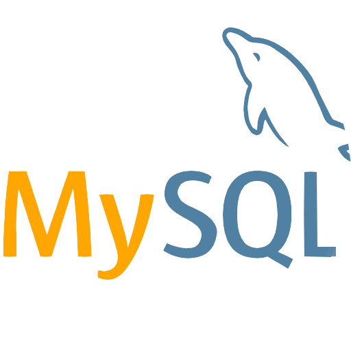
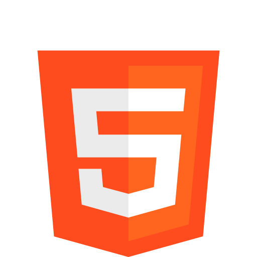
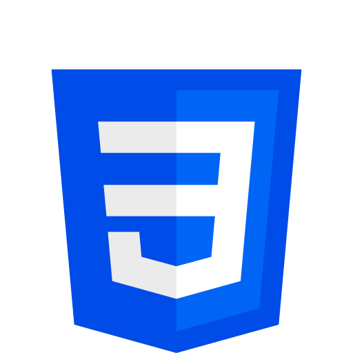
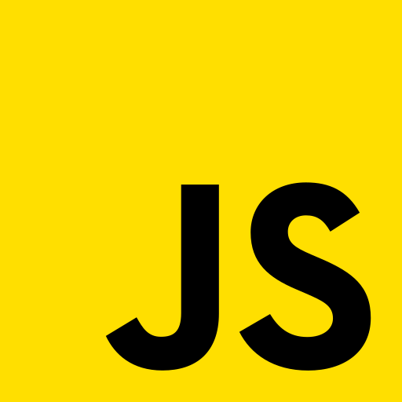
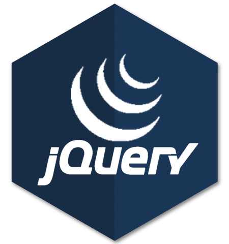
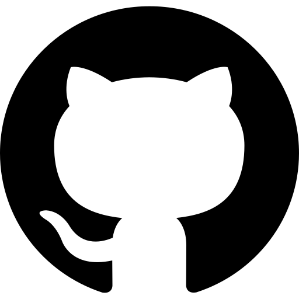

Gracias por mirar mi web, espero que le resulte de agrado
Esta es la ventana principal, como puede ver no hay mucho contenido,
esto lo hago para no mostrar información que no quiera ver.
Puede ver la información pulsando en los botónes que puede encontrar en la parte superior (lo que va a cambiar el contenido que está leyendo ahora mismo)
o tambien puede presionar algúnos de los siguientes botones (que hacen exactamente lo mismo que los botones de la parte superior).
Biografía
Aplicaciones
Contactos
Hola, mi nombre es Gabriel Nicolás Perero. Nací el 16 de marzo por lo que ahora mismo tengo
Desarrollo de aplicaciones de escritorio
Desarrollo de aplicaciones para dispositivos móviles
Android Studio
Desarrollo y manejo de bases de datos
SQL

Desarrollo de pájinas y aplicaciones web




herramientas

Docker
Visual Studio Code
Visual Studio
Aplicaciones Microsoft
Microsoft Word
Microsoft Excel
Microsoft Acces
Microsoft PowerPoint
Documentos Google
Google Docs
Google Sheets
Google Forms
Idiomas
Español
Italiano
Cursos
Curso Profesional de Git y GitHub (2022)
Curso Profesional de DevOps (2022)
Curso de New Relic: Observabilidad, Monitoreo y Permormance Web (2022)
Curso de Dart desde Cero (2022)
Aprende análisis de Datos (2022)
Curso de Introducción a Java SE (2022)
Curso de Programación Orientada a Objetos - POO (2022)
Curso Profesional de Scrum (2022)
Completé la primaria y la secundaria en mi pueblo. En 2017, cuando comencé la universidad.
+ Realización de diagnósticos de necesidades de información.
+ Diseñar nuevos sistemas y/o modificación de los existentes en una organización pública o privada.
+ Realizar especificación, diseño, implementación, prueba, mantenimiento y control de calidad de sistemas de información.
+ Realizar la codificación de rutinas de software, según las especificaciones elaboradas en la fase de diseño.
+ Documentar y actualizar la carpeta de sistemas y los manuales conexos.
+ Realizar estudios de factibilidad y/o referentes a la configuración y dimensionamiento de los sistemas de procesamiento de información.
+ Realizar la capacitación al personal que utiliza los sistemas.
+ Análisis y evaluación de proyectos de especificación, diseño, implementación, verificación, puesta a punto, mantenimiento y actualización de sistemas de procesamiento de datos.
link se puede ver un poco sobre la carrera que hice.
No tengo un gran recorrido profesional. Proyectos .
La verdad no sabría cómo describirme, diría que normal pero tampoco llego a ser como el estereotipo de las personas de mi generación que me rodean, soy más... ¿peculiar?
Mediador (INFP) .
16personalities.com .